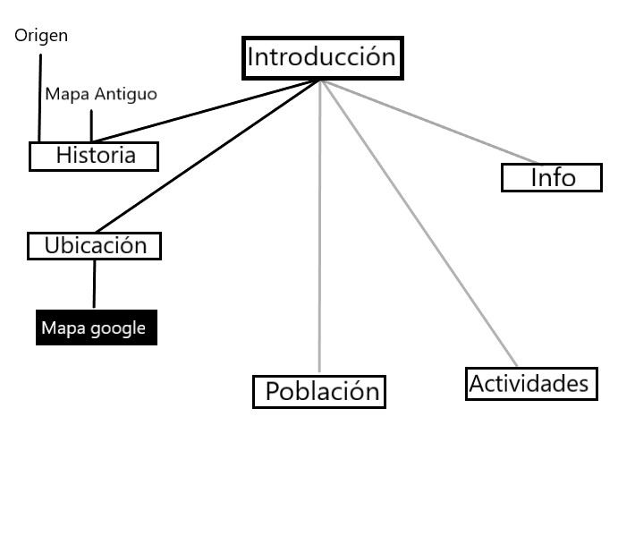

Utrecht
Introduccion
Historia
Ubicacion
Mapa
Poblacion
Actividades
Info
Mapa Sitio Web
Bibliografia
Creditos
Mapa Sitio Web

Bibliografia
Se pondran todas las referencias bibligraficas usadas para adquirir la informacion suministrada en esta pagina.
-
http://www.holandalatina.com/
-
https://www.holland.com/es/turista/destinos/provincias/utrecht/provincia-utrecht-1.htm
-
https://es.wikipedia.org/wiki/Catedral_de_San_Mart%C3%ADn_(Utrecht)
-
https://en.wikipedia.org/wiki/Utrecht
-
https://www.tripadvisor.co/Attractions-g188616-Activities-Utrecht.html
-
https://tourhistoria.com/2010/11/17/utrecht-una-ciudad-con-historia/
Imagenes
-
https://d1bvpoagx8hqbg.cloudfront.net/originals/experiencia-erasmus-utrecht-paises-bajos-adrian-5c61d9e2e67147ead0adcd94472d5593.jpg
-
https://upload.wikimedia.org/wikipedia/commons/thumb/a/a0/Flag_of_Utrecht.svg/150px-Flag_of_Utrecht.svg.png
-
http://www.holandalatina.com/utrecht.htm
-
https://i.etsystatic.com/6320852/r/il/314e2d/1556805506/il_570xN.1556805506_mmjb.jpg
-
https://i2.bssl.es/porconocer/2015/06/iglesia-pedro.jpg
-
https://images4.persgroep.net/rcs/k6LHCwqYCyX4Ur6imK29CiRv_FQ/diocontent/73938334/_fitwidth/694/?appId=21791a8992982cd8da851550a453bd7f&quality=0.9
Creditos
Pagina desarrollada para Ejercicio de la materia Grafica Interactiva 2018-3.
Estudiantes de Ingenieria de Sistemas y Computacion:
Juan David Santamaria Rojas.
Correo: judsantamariaro@unal.edu.co.